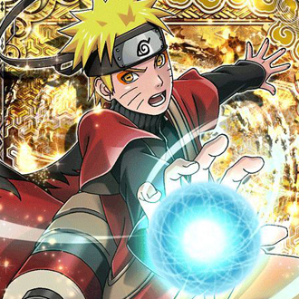
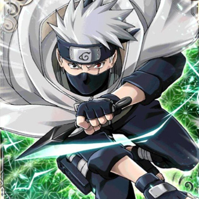
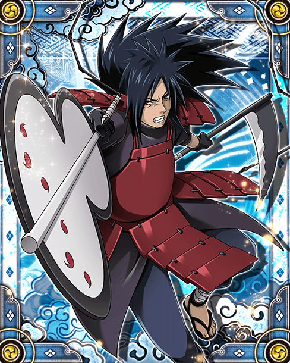
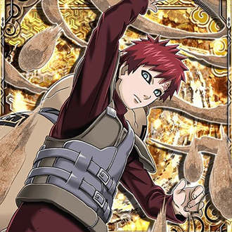
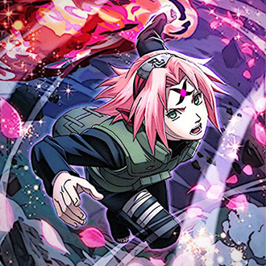
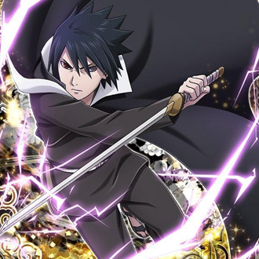

-
Naruto Uzumaki
Descrição
Naruto Uzumaki (うずまきナルト, Uzumaki Naruto) é um shinobi de Konohagakure do clã Uzumaki e protagonista homônimo da franquia Naruto. Desde seu nascimento, ele se tornou jinchuuriki das Nove-Caudas, um destino que o levou a ser condenado e negligenciado por toda a aldeia durante sua infância. Depois de entrar para o Time 7, ao lado de Sakura Haruno, Sasuke Uchiha e sob comando de Kakashi Hatake, Naruto trabalhou duro para ganhar o respeito e o reconhecimento da aldeia, com o sonho de se tornar Hokage. Nos anos seguintes, Naruto passa a ser um ninja reconhecido pela aldeia, que é eventualmente considerado como um herói pelas pessoas, e mais tarde, pelo mundo shinobi em geral, renomado como o Herói da Vila Oculta da Folha (木ノ葉隠れの英雄, Konohagakure no Eiyū). Posteriormente, Naruto descobre ser a reencarnação do espírito de Ashura e anos depois da Quarta Guerra Mundial Shinobi, Naruto realiza seu sonho e se torna o Sétimo Hokage (七代目火影, Nanadaime Hokage; literalmente significa: "Sétima Sombra do Fogo"). Naruto se casa com Hinata Hyuuga e tem dois filhos com ela, Boruto Uzumaki e Himawari Uzumaki, e mais tarde adota Kawaki Uzumaki.
-
Kakashi Hatake
Descrição
Kakashi Hatake (はたけカカシ, Hatake Kakashi) é um shinobi de Konohagakure. Ele recebeu um Sharingan de seu ex-companheiro de equipe, Obito Uchiha, quando era mais jovem, fazendo-o ser conhecido como Kakashi o Ninja Copiador (コピー忍者のカカシ, Kopī Ninja no Kakashi) e Kakashi do Sharingan (写輪眼のカカシ, Sharingan no Kakashi). Seu prodigioso talento, habilidades e destreza com o Sharingan fizeram dele um dos mais capazes ninjas da aldeia, sendo reconhecido em todo o mundo ninja. Ele acaba sendo nomeado como líder do Time Kakashi, onde ele usa seus anos de experiência para treinar seus alunos para se tornarem ninjas habilidosos de suas próprias maneiras. Logo um tempo após a Quarta Guerra Mundial Shinobi, Kakashi ocupa o cargo público como o Sexto Hokage (六代目火影, Rokudaime Hokage; literalmente significa: "Sexta Sombra do Fogo") antes de eventualmente se aposentar e passá-lo ao seu pupilo Naruto Uzumaki.
-
Madara Uchiha
Descrição
Madara Uchiha (うちはマダラ, Uchiha Madara) foi o lendário líder do clã Uchiha durante a Era dos Estados Combatentes e um dos principais antagonistas da série. Ele fundou Konohagakure ao lado de seu rival, Hashirama Senju, com a intenção de iniciar uma era de paz. Eventualmente, quando os dois não concordaram quanto ao meio para alcançar a paz, eles lutaram pelo controle da aldeia em um combate histórico, que terminou com a morte de Madara. Contudo, Madara burlou sua própria morte e se escondeu, estendendo sua própria vida para trabalhar em seus planos para acabar com os conflitos mundiais. Incapaz de conclui-los em vida, Madara confiou seu conhecimento e planos a Obito Uchiha, pouco antes de morrer. Anos mais tarde, Madara foi reanimado e depois devidamente ressuscitado durante a Quarta Guerra Mundial Ninja. No entanto, os planos de Madara são definitivamente frustrados pelos esforços das Forças Aliadas Shinobi, e à beira de seus últimos momentos, ele percebe os erros de seu caminho e ateia as pazes com Hashirama antes de sua verdadeira e definitiva morte.
-
Gaara
Descrição
Gaara (我爱羅) é um shinobi de Sunagakure. O Shukaku foi selado em seu corpo no dia de seu nascimento, um procedimento que resultou na morte de sua mãe. Considerado como um monstro pela vila e sem ninguém para amá-lo, Gaara passou a desprezar o mundo e começou contando apenas com sua própria força, ganhando o título de Gaara do Deserto (砂瀑の我愛羅, Sabaku no Gaara; Panini: "Gaara da Areia"). Este poder de auto-amor é mais tarde derrotado pela dedicação inabalável de Naruto Uzumaki por seus amigos. Desse ponto em diante, Gaara começa a seguir o método de Naruto e muda as opiniões de Sunagakure com relação a ele. Eventualmente, ele ascende ao posto de Quinto Kazekage (五代目風影, Godaime Kazekage), uma posição que ele mantém, mesmo depois de Shukaku ser removido de seu corpo pela Akatsuki.
-
Sakura Uchiha
Descrição
Sakura Uchiha (うちはサクラ, Uchiha Sakura) (batizada Haruno (春野) inicialmente) é uma kunoichi de nível jounin do clã Uchiha, por se casar com Sasuke Uchiha, de Konohagakure. Ela é designada como um membro do Time Kakashi, mas rapidamente encontra-se mal preparada para os deveres de um ninja e as complicações das vidas de seus companheiros de equipe. Treinando sob a tutela de sua mestra, Tsunade, ela se torna uma kunoichi mais forte e uma excelente ninja médica, sendo capaz de enfrentar os desafios de uma vida como um ninja, bem como ajudar e proteger seus amigos e entes queridos quando eles precisarem dela. Anos após a Quarta Guerra Shinobi, ela forma sua própria família com Sasuke Uchiha.
-
Sasuke Uchiha
Descrição
Sasuke Uchiha (うちはサスケ, Uchiha Sasuke) é um dos últimos membros sobreviventes do clã Uchiha de Konohagakure, além de ser a reencarnação atual de Indra. Ele se tornou um shinobi para que pudesse algum dia ficar forte o suficiente para se vingar contra o seu irmão mais velho, Itachi, que tinha massacrado todo o seu clã. Inicialmente, um membro do Time Kakashi de Konoha, Sasuke desertou da aldeia para obter poder com Orochimaru, e mais tarde também se juntou a Akatsuki, tornando-se um criminoso internacional no processo. Mais tarde, ele se torna uma peça fundamental para acabar com a Quarta Guerra Mundial Ninja, até ser finalmente redimido por seu rival, e também melhor amigo, Naruto Uzumaki. Sasuke decide voltar para Konoha, dedicando a sua vida para ajudar a proteger a vila e seus habitantes.